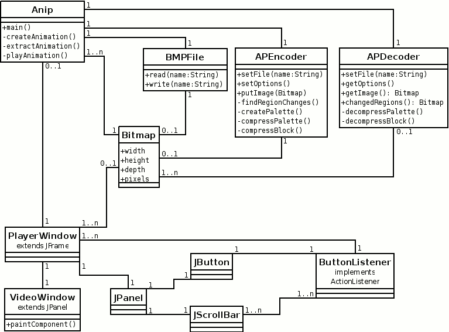
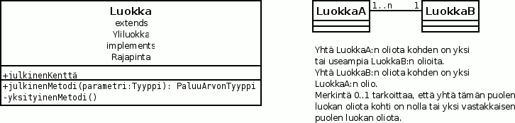

Artturi Tilanterä 12.10.2008


Pääluokka, joka käyttää muita luokkia.
main()
- Käynnistysmetodi. Käsittelee komentoriviparametrit, tai delegoi niiden
käsittelemisen jollekin yksityiselle metodille, ja päättää jatkotoimista. Jos
parametrisyöte oli kelvollinen, kutsuu jotain seuraavasta kolmesta
metodista.
private createAnimation()
- Luo uuden animaatiotiedoston BMP-kuvista kutsumalla
BMPFile- ja APEncoder -luokkien metodeita.
private extractAnimation() - Luo BMP-kuvatiedostosarjan
animaatiotiedoston perusteella kutsumalla APDecoder- ja
BMPFile -luokkien metodeita.
private playAnimation() - Käynnistää graafisen käyttöliittymän
animaation toistoa varten luomalla Player -olion.
Säiliöolio, jota käytetään kuvadatan siirtämiseen luokkien välillä.
BMP-tiedoston käsittely.
read() - Lukee BMP-tiedoston levyltä ja tallentaa
kuvasisällön Bitmap -olioon.
write() - Tallentaa Bitmap -olion kuvasisällön
BMP-tiedostoon levylle.
Animaation pakkaaja ja levylle tallentaja.
setFile() - Aloittaa ja lopettaa kirjoittamisen tiedostoon.
setOptions() - Asettaa animaation kuva-, toisto- ja
mahdolliset pakkausasetukset.
putImage() - Antaa pakkaajalle uuden kuvan pakattavaksi ja
liitettäväksi levylle kirjoitettavaan animaatiotiedostoon.
private findRegionChanges() - Vertaa uutta pakattavaksi
saatua kuvaa edelliseen ja merkitsee muistiin ne 8x8 pikselin alueet, jotka
ovat muuttuneet.
private createPalette() - Luo 256 värin paletin 24-bittisestä
kuvasta muuttuneiden alueiden väridatan pohjalta.
private compressPalette() - Pakkaa 256 värin paletin datan
levylle kirjoitettavaksi. Pyrkii käyttämään uudestaan edellisen paletin
värejä.
private compressBlock() - Pakkaa 8x8 pikselin lohkon
muun muassa sovittaen sen 256 värin paletille.
Animaatiotiedoston lukija ja purkaja.
setFile() - Aloittaa ja lopettaa lukemisen tiedostosta.
getOptions() - Kertoo animaation kuva-, toisto- ja
mahdolliset pakkausasetukset.
getImage() - Antaa järjestyksessä seuraavan puretun kuvan.
changedRegions() - Antaa tiedot siitä, mitkä 8x8 pikselin
lohkot ovat muuttuneet.
setPosition() - Siirtyy animaation purkamisessa
järjestysnumeroltaan haluttuun kuvaan.
private decompressPalette() - Purkaa pakatun 256 värin
paletin.
private decompressBlock() - Purkaa 8x8 pikselin lohkon.
Graafinen käyttöliittymäikkuna. Periytyy Javan Swing -kirjaston ikkunaluokasta JFrame.
Alue, jossa toistettava videokuva näytetään. Periytyy Javan Swing -kirjaston luokasta JPanel.
paintComponent() - Piirtometodi.
Painike, josta saa käynnistettyä ja pysäytettyä animaation toistamisen. Javan Swing -kirjaston luokka.
Liukusäädin, jolla voi hypätä haluttuun kohtaan animaation toistamisessa sekä siirtyä seuraavaan kuvaan tai edelliseen avainkuvaan. Javan Swing -kirjaston luokka.
Näkymätön alue, joka asettaa PlayButton- ja PositionControl -luokkien ilmentymät vaakasuunnassa vierekkäin. Javan Swing -kirjaston luokka.
Tapahtumankuuntelija, joka jatkokäsittelee PlayButtonin ja PositionControlin muutoksia käyttäjän tehdessä niille jotain. Toteuttaa Javan AWT -kirjaston rajapinnan ActionListener.
BMP-tiedoston lukurutiinit ovat omassa luokassaan, jotta niitä voidaan tarvittaessa käyttää uudelleen toisissa ohjelmissa. BMP-tiedoston luku- ja kirjoitusrutiinit ovat hyvin yksinkertaisia, joten on luontevaa säilöä molemmat samaan luokkaan. [1]
Graafinen käyttöliittymä on omissa luokassaan jo Javan AWT- ja Swing- käyttöliittymäkirjastojen käyttötavan pakottamana. [2], [3] Tässä ratkaisussa on se etu, että graafista käyttöliittymää voidaan muuttaa helposti tai se voidaan jättää pois tai korvata toisella.
Bitmap on kätevä säiliöolio. Sen avulla voi välittää pikselidatan mukana kuvan leveyden ja korkeuden yhtenä ainoana metodikutsun parametrina, tai jopa palauttaa kaikki nämä tiedot metodin paluuarvona.
Tietysti on kapselointi-idean vastaista, että varsinaisen kuvadatan sisältävät kentät ovat julkisia. [4] Vaihtoehtona olisi tehdä metodit, jotka kirjoittavat ja lukevat kuvadataa pikseli tai alue kerrallaan, mutta juuri tässä ohjelmassa tiuhaan toistuvat metodikutsut ja niihin liittyvät tarkistukset parametrien oikeista arvoista söisivät suorituskykyä. Sittenkin, jos esimerkiksi animaatiota purettaessa dekooderi lisäisi RGBBitmap-olioon tietoa aina yksi 8x8 pikselin lohkoista koostuva vaakarivi kerrallaan, niin data jouduttaisiin kuitenkin kopioimaan, mikä tuntuu tarpeettomalta verrattuna siihen, että dekooderi kirjoittaa datan kerran tähän säiliöolioon ja siitä eteenpäin se luetaan kerran kirjoitettaessa BMP-tiedostoon tai ruudulle piirrettäväksi.
APEncoder ja APDecoder olisivat voineet olla molemmat samassa luokassa. Toisin kuin BMP-rutiinit, ne ovat monimutkaisia. Jos ohjelmasta halutaan tehdä versio, joka on vain videota toistava Java-appletti web-sivulla, niin animaation pakkausrutiini vie vain turhaan tiedonsiirtoaikaa ja appletti käynnistyy hitaammin, kun sen tavukoodi pitää kääntää käytettäväksi. Sen sijaan animaatiotiedoston luku- ja kirjoitusrutiinien on luontevaa olla samoissa luokissa kuin purku- ja pakkausrutiinien, koska ne lähinnä toimivat välittäjänä massamuistille ja edellämainituille datankäsittelyrutiineille.
Ohjelma käynnistetään käyttöjärjestelmän komentoriviltä kaikissa käyttötapauksissa. Komentorivikomennot onkin jo kerrottu käyttöliittymän luonnoksessa yleissuunnitelmassa.
Kun käyttäjä on antanut ohjelmalle käynnistysparametreina pakkauskomennon, Anip -luokka käynnistää yksityismetodinsa createAnimation() suorittamaan työn. Tämä metodi luo yhden APEncoder -olion antaen sille aluksi animaatiotiedoston nimen ja pakkausasetukset setFile()- ja setOptions()-metodeita kutsumalla. APEncoderin setFile() avaa tiedoston kirjoittamista varten ja kirjoittaa tiedoston alun, jossa on tiedostotyypin tunniste.
createAnimation() luo vielä Bitmap -olion. Sitten se aloittaa silmukan, jossa se luetuttaa BMP-tiedoston BMPFile -luokan read() -metodilla, joka vie kuvan tiedot createAnimation():in Bitmap -olioon. Sitten createAnimation() antaa Bitmap-olion (viittauksen) parametrina APEncoderin putImage() -metodille.
APEncoderin putImage() pakkaa kuvan saman tien ja kirjoittaa sen levylle. Pakkaamisen eri vaiheet se delegoi luokan yksityisille findRegionChanges()-, createPalette()-, compressPalette()- ja compressBlock() -metodeille.
Koko kuvaa koskevan 256-värisen paletin uusien värien määrä lasketaan kaavalla
minimi + (256 - minimi) * muuttuvat / kaikki,
jossa
Siis mitä suurempi alue kuvassa muuttuu, sitä suurempi määrä värejä varataan muutokselle. Loput värit ovat edellisen kuvan paletin värejä, joita pyritään käyttämään myös tässä kuvassa.
Varsinaiseen kuvapaletin muodostamiseen käytetään yleisesti tunnettua octree quantization -menetelmää. [5], [6], [9], [10]
Vaihtoehtoja: Median cut -tekniikka, joka on vielä paremmin tunnettu kuin octree. Octree on valittu sillä perusteella, että sillä oletetaan saavan paremman lopputuloksen, kun se toteutetaan viemällä ensin kaikki värit puuhun, ja vasta sitten sulauttamalla värejä toisiinsa. Silloin octree on hitaampi ja vie enemmän muistia, mutta se ei ole oleellista pakkaamisessa.
Toisaalta on tietysti kyseenalaista, katoaako octreen laatuero median cutiin siinä vaiheessa, kun värejä rajoitetaan uudestaan 8x8 lohkojen sisällä. Tässä vaiheessa en ole täysin varma, kumpi algoritmi on parempi, mutta oletan mahdollisimman hyvään laatuun pyrkivän octreen aiheuttavan väriliu'uissa hieman hienostuneemman näköistä raidoittumista, jota syntyy pakosta värien määrää rajoittaessa. Saatan päätyä kokeilemaan molempia algoritmeja käytännössä.
Jokaisella 8x8 pikselin lohkolle sovitetaan kuvalle muodostettu 256-värinen paletti seuraavasti.
Kun pikselin väri on (r, g, b), joissa r:n, g:n ja b:n arvot ovat välillä 0..255, ja paletin väriarvot ovat pr[i], pg[i], pb[i] samaten arvoiltaan välillä 0..255 kuten myös indeksi i, niin sopivin paletin väri pikselille on se, jolla pikselin väriarvon etäisyys paletin väristä rgb-väriavaruudessa on pienin. Tämä on se i:n arvo, jolla
sqrt( (pr[i] - r)^2 + (pg[i] - g)^2 + (pb[i] - b)^2 )
on pienin. (sqrt on neliöjuuri, ^2 korotus toiseen potenssiin.) [5]
Animaatio pakataan kuva kerrallaan. Yksi kuva pakataan seuraavasti.
Käytännössä kaksi viimeistä vaihetta tehdään limittäin niin, että ensin lohko pakataan RLE-koodauksella ja sitten se kirjoitetaan levylle.
Algoritmin toimintaideat: Pakkausalgoritmin pääidea on siis tiivistää väri-informaatiota häviöllisesti kuvaamalla värisävyt hyvin rajoitetun kokoiselle joukolle värisävyjä. Näin tarvitaan vähemmän bittejä pikseliä kohti väri-informaation esittämiseksi. Toinen pääidea on tallentaa kuvasta vain muuttuvat alueet.
Kuvan jakamisen pieniin osa-alueisiin, joissa jokaisessa väri-informaatiota rajoitetaan edelleen paikallisesti, oletetaan muodostuvan kannattavaksi, kun havaitaan, että mitä rajoitetumpi määrä värejä kuvan osa-alueessa on, sen paremmin se pakkautuu yksinkertaisella RLE-koodauksella.
Vaihtoehtoinen osatoteutus:Toinen lähestymistapa pakata lopullisesti rajoitettu väri-informaatio olisi käyttää RLE:tä monimutkaisempaa pakkausta, ja kenties kaikille lohkoille yhteisesti. Yksi tällainen monimutkaisempi pakkausmenetelmä olisi Huffman-koodaus, jota muun muassa JPEG-kuvatiedostomuoto käyttää jälkipakkaukseen, tosin RLE:n kanssa yhdessä. [8] Nykyisessä toteutuksessa olen kuitenkin lähtenyt ajatuksesta, että RLE-pakkaus olisi laskennallisesti hyvin helppo purkaa ajatellen animaation purkamista tai reaaliaikaista toistamista, jossa nopeus on tärkeää. Lisäksi olen ajatellut, että kun yhdessä 8x8 pikselin lohkossa on 16 värillä keskimäärin yksi väri neljää pikseliä kohti, niin väri-informaatiota tuskin katoaa häiritsevän paljon.
Animaation purkamisessa on periaatteessa samat vaiheet kuin pakkaamisessa, mutta käänteisessä järjestyksessä, ja paletin muodostamisia ja sovittamisia ei ole.
Koska ohjelmassa on suuria pikseli- ja värijoukkoja, toisin sanoen suuria määriä hyvin yksinkertaisia data-alkioita, niiden varastointi ja käsittely on luontevinta ja suorituskyvyn kannalta optimaalisinta tehdä taulukoissa. Taulukkorakennetta myös tukee se, että pikseli- ja värijoukkojen koko tai ainakin enimmäiskoko tiedetään ennalta, joten dynaamista muistinkäsittelyä ei juurikaan tarvita.
Octree on siis yleisesti tunnettu puurakenne, jota käytetään paletin muodostamisessa. Puun jokaisella solmulla on kahdeksan lehteä, jotka vastaavat kolmen bitin kaikkia erilaisia yhdistelmiä: yksi bitti kutakin värikomponenttia (R, G, B) kohti. Puuhun siis tallennetaan kuvassa esiintyvistä RGB-värisävyistä ja siitä, kuinka monta pikseliä on kutakin värisävyä. Värit haarautuvat RGB-bittiyhdistelmä kerrallaan juurisolmussa olevista R:n, G:n ja B: merkitsevimmistä biteistä lähtien alaspäin järjestyksessä vähemmän merkitseviin. [6]
Aion toteuttaa ja testata ohjelman eri osat jotakuinkin siinä järjestyksessä, kun olen maininnut ne jo yleissuunnitelmassa.
| Viikko | Osa-alueet | Tuntia yht. |
| 42 | BMP-tiedostojen lukeminen ja kirjoittaminen = 3 h. Grafiikan piirtäminen ruudulle = 1 h. 256 värin paletin muodostaminen BMP-kuvan pohjalta = 11 h. |
15 |
| 43 | 256 värin paletin muodostaminen BMP-kuvan pohjalta = 9 h. Lohkokohtaisten 16 värin palettien muodostaminen = 2 h. Muuttuvien alueiden tunnistaminen = 3 h. |
14 |
| 44 | 256 värin kuvapaletin pakkaaminen ja purkaminen = 4 h. 16 värin lohkopaletin pakkaaminen ja purkaminen = 3 h. Alueiden muuttuvuustiedon pakkaaminen ja purkaminen = 1 h. Animaatiotiedoston kirjoittaminen = 7 h. |
15 |
| 45 | Animaatiotiedoston lukeminen = 8 h. Animaatiotiedoston toistaminen ruudulla (ilman käyttäjän mahdollisuutta vaikuttaa toistoon) = 7 h. |
15 |
| 46 | Animaatiotiedoston kirjoittaminen kuvatiedostoiksi = 4 h. Graafinen käyttöliittymä = 11 h. |
15 |
| 47 | (Varattu aikataulun muutoksille, viimeistelylle ja dokumentaatiolle) | 15 |
| 48 | (Varattu aikataulun muutoksille, viimeistelylle ja dokumentaatiolle) | 15 |
| Ainakin 100 |
On mahdollista, että arvioitu kuluva kokonaisaika puolitoista- tai kaksinkertaistuu ohjelmoinnissa sattuneiden virheiden eliminoimisen tai vaihtelevan työtehon takia.
Tämä kohta näyttää olevan identtinen yleissuunnitelmassa olevan järjestelmätestaussuunnitelman kanssa. (Huomio: kyseisen kohdan loppuun tuli lisäys jälkikäteen.)
[1] BMP file format. Wikipedia. Viitattu 9.10.2008
[2] JavaTM 2 Platform Standard Edition 5.0 API Specification. Sun Microsystems, Inc. Viitattu 11.10.2008
[3] TKK:n kurssin T-106.1240 Ohjelmoinnin jatkokurssi T1 (Java) luentokalvot. Otto Seppälä. Viitattu 11.10.2008.
[4] Laatuseikkoja. TKK:n kurssin "T-106.1200 Ohjelmoinnin perusteet L (Java)" luento. Juha Sorva. Viitattu 11.10.2008.
[5] Color quantization. Wikipedia. Viitattu 11.10.2008
[6] Octree. Wikipedia. Viitattu 11.10.2008
[7] Run-length encoding. Wikipedia. Viitattu 12.10.2008
[8] Huffman coding. Wikipedia. Viitattu 12.10.2008
[9] Color Quantization Overview. Algolist.manual.ru. Viitattu 12.10.2008
[10] Octree Color Quantization. Nils Pipenbrinck 1998. Viitattu 12.10.2008
12.10.2008 Artturi Tilanterä